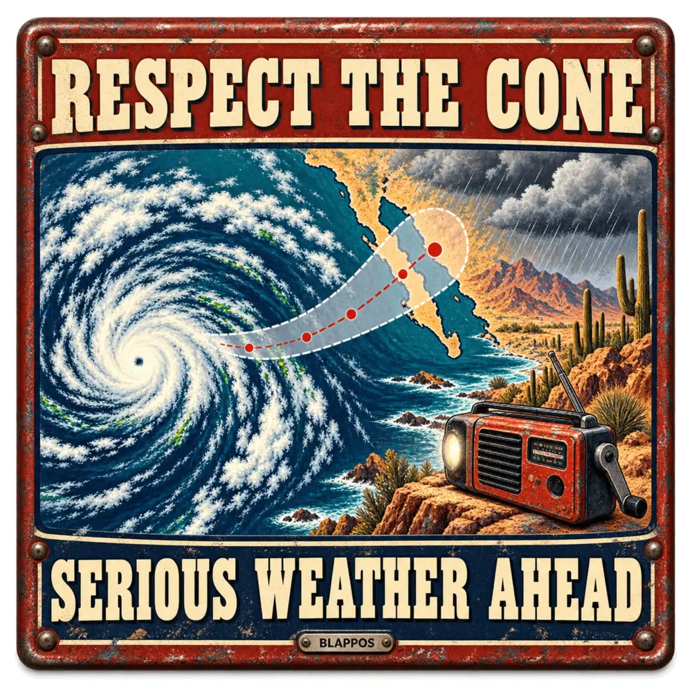

EST. DURING THE COLLAPSE
Wish you
Wish you
weren’t here.
The world keeps making terrible postcards. We just add the lettering.
SEE TODAY’S DAMAGE ↓
Today’s featured bad tripONE HEADLINE ★ ONE IMAGE ★ ONE PUNCHLINE ★ THEN THE ACTUAL FACTS ★
THE DAILY DAMAGE
Latest blappos
Satire on the front. Sourcing on the back. Tap any card for the story.
North Carolina woman wins the same $100,000 scratch-off prize twice
Florida firefighter earns world record as shortest woman in the profession
U.S. and China pledge a more stable relationship after Washington summit
Sixteen Katmai bears enter the internet's weightiest election
78-year-old Scottish gamer becomes oldest female Fortnite streamer on Twitch
HYROX changes hygiene rules after Beijing competitor was allowed to continue racing
New “fire amoeba” sets the heat record for complex life
Turkish town cooks the world’s largest pot of baked beans
Firefighters, animal control and utility crews rescue dogs from a Georgia storm drain
Seattle opens an “Inconvenience Store” with pre-tangled USB cords
Sixty organizations unite to build AI language data beyond the English internet
Cow leaves remote French mud by helicopter; ground transport unavailable
Singing lemurs use an opera trick to carry notes through Madagascar’s forest
Tourists chase a dramatic beach photo; rising tide directs the sequel
NFL players cool melting cleats as Nashville turf reaches 157°F
Koala checks into an Australian bedroom without a reservation
Cyclist wins record fourth straight world time-trial title
White House revokes access for reporters from CNN, MS NOW and Politico
AI actress changes languages mid-interview; technical difficulty requests representation
Rescue crew winches family of four from yacht grounded on remote reef
THREE ITEMS. ZERO DIGNITY.
Ridiculously relevant
Three real Amazon finds selected specifically for today’s stories—never a generic search result.
As an Amazon Associate, Blappos may earn from qualifying purchases. Product availability and pricing can change.
2026 / THE DAMAGE SO FAR
Month by month
The defining stories plus the daily absurdities worth preserving.
Hurricane Polo returns to Category 5 as Baja California watches its turn
North Carolina woman wins the same $100,000 scratch-off prize twice
Florida firefighter earns world record as shortest woman in the profession
U.S. and China pledge a more stable relationship after Washington summit
Sixteen Katmai bears enter the internet's weightiest election
78-year-old Scottish gamer becomes oldest female Fortnite streamer on Twitch
HYROX changes hygiene rules after Beijing competitor was allowed to continue racing
New “fire amoeba” sets the heat record for complex life
Turkish town cooks the world’s largest pot of baked beans
Firefighters, animal control and utility crews rescue dogs from a Georgia storm drain
Seattle opens an “Inconvenience Store” with pre-tangled USB cords
Sixty organizations unite to build AI language data beyond the English internet
Cow leaves remote French mud by helicopter; ground transport unavailable
Singing lemurs use an opera trick to carry notes through Madagascar’s forest
Tourists chase a dramatic beach photo; rising tide directs the sequel
NFL players cool melting cleats as Nashville turf reaches 157°F
Koala checks into an Australian bedroom without a reservation
Cyclist wins record fourth straight world time-trial title
White House revokes access for reporters from CNN, MS NOW and Politico
AI actress changes languages mid-interview; technical difficulty requests representation
Rescue crew winches family of four from yacht grounded on remote reef
$30 estate-sale painting discovers it has a $250,000 résumé
One millisecond breaks UK air traffic; 2,000 flights file a bug report
Humpback whale misses Pacific exit by 60 miles, tours Sacramento River
Runaway parade horse activates motorcycles, drones and the entire cowboy reserve
Omaha unspools 429 feet of Slim Jim; city declares protein infrastructure complete
Venomous sea snake reaches California; beach towels lose diplomatic immunity
Wisconsin woman seasons a world-record rematch with 754 matching pairs
Yellowstone retrieves 20,100 trash pieces and 280 hats from the world’s worst lost-and-found
Viral tiger escapes only from a video; 911 still gets the paperwork
McDonald’s patty loses thickness contest to a pickle and demands a recount
934 Trekkies raise one hand; London records peak logic
Rambo hides from nine ewes; concrete pipe requests backup
Elk mounts parked car; windshield resigns immediately
Library receives magazine 132 years late; fine arrives historically waived
Man folds 415 paper planes; airport reports zero useful departures
ScotRail quiet carriage adds one extremely airborne passenger
Police deploy drone against emu; bird declines to look worried
NATO scrambles a fighter jet; hostile formation turns out to be birds
San Francisco screams at the Pacific; ocean declines to comment
Sweet shop upgrades dessert to precious metal and charges accordingly
Elephant enters free agency after humiliating entire midfield
Scientists put plastic bottles in cookies; recycling bin requests a lawyer
72-year-old reaches 24,000 feet; recliner declared medically boring
Thieves steal 70,000 pints of Guinness; Britain activates the foam reserves
Passenger books a cab, becomes the cab, receives no promotion
Fleeing Mustang challenges parked airplane, loses dogfight immediately
Mom brings a flip-flop to a coyote fight and gets her daughter home
Government bus gets Wi-Fi, televisions, pantry and a toilet before most airlines
CEO spends $370,000 on romance, discovers gifts lack a refund policy
Coyote takes the alley shortcut and becomes part of the building
President removes jacket, benches 220 pounds twenty times, resumes diplomacy
Man solves 211 puzzle cubes on a pogo stick because sitting was too easy
Five-week-old kitten turns interstate rescue into a foot pursuit
Ohio Stadium squirrel gets escorted from premium seating
Two-decade tech fight finally gets a courtroom
1937 mural catches a time traveler checking his notifications
Robot applies wedding henna and immediately requests a five-star review
Account gains 10 million followers by finally keeping quiet
World’s tallest living horse now needs upstairs neighbors
World’s narrowest drivable car leaves elbow room off the blueprint
Denied one horse, woman acquires 7,500 ponies instead
Driver discovers bagel preparation is not a hands-free feature
Climate justice arrives with an invoice
Citgo custody battle reaches another season
Nuclear watchdog forwards thread to Security Council
Air Force One deploys the exit before the president boards
Nicolas Cage’s driveway gets a basement it did not order
Escaped goat becomes acting neighborhood security director
Baseball crowd completes emergency stadium hot-dog assembly
Wisconsin mechanic discovers one hose has opinions
Terrier loses argument with recliner; firefighters escalate immediately
Disc golfers make relaxation stressful in 41.33 seconds
Woman plays same lottery numbers for 20 years and finally wins the argument
The seventh typhoon is apparently the charm
Prince William is now a 12-foot crocodile, technically
NASA launches the universe’s new auditor
Cyborg cockroach applies for first responder
Mass kidnapping tests another promise
Democracy narrowly avoids sharing a stage
Spain wins, FIFA survives the ceremony
Another British premiership reaches checkout
Starship aborts before adding another crater
Campaign trail includes ankle accessory
Farage finds another exit
Prime minister-in-waiting enters the queue
Annual report becomes contact sport
UFO disclosure includes suspicious potato
Forty-eight teams enter one group chat
Bacteria told to start paying utilities
Robot gets the worst lake assignment
Startup closes the pee loop
Profit meets the cost it never budgets
NASA discusses the upstairs addition
New telescope asks universe to hold still
Scientists meet another virus nobody ordered
Record shutdown finally finds an ending
Space industry hires lichens
World heritage site becomes crime scene
Robots enter half-marathon, regret cardio
Fire season declines to wait for summer
AI spending discovers infinity
Senate discovers voice vote technology
Sea ice ties record low, loses tiebreaker
Security line now visible from space
March skips directly to broil
Telegram receives a government friend request
Peace talks receive 1,300 drones
Government closes one department at a time
The world argues politely on ice
Nuclear limits expire from lack of interest
Doomsday clock requests smaller units
Russia misplaced several cities under snow
Twenty degrees to snow in one week
Federal surge meets Minnesota nice
Regime change gets express shipping
The joke is the cover.
The truth is the point.
01 Every card links to the reporting behind it.
02 Satire is labeled. Images are illustrations.
03 Punch up at systems, power, and spectacular failure.
COMING NEXT
A fresh disaster in your inbox.
New sourced satire lands here daily. Every available Blappos magnet is collected in the shop.